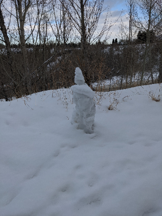

2021-2-24
Whoa! The month of Febuary just flew by. It's almost been two weeks and I didn't even realize it!
Somehow I managed to finish those 100 pages of french homework, and even scraped out a 91% on the unit test! I guess studying does pay off.
I also coded my own tool to help me study french in java. To be honest I'm really proud of it, and it's probably one of the cleanest things
I've written. We have our next french quiz on friday, on lessons 5 and 6.
In math, our class did so poorly on the first quadratics quiz that our teacher let us write a second one. looooooool. We also just wrote our polynomials quiz yesterday, with the unit final coming up tomorrow. Some of the questions on the worksheet were suuuper difficult so I'm not sure how well I'm going to do. I do fine on quizzes but the unit finals are usually a struggle.
In chemistry, the teacher exploded at a student for asking question about the upcoming gas quiz, which we just wrote a couple days ago. It was soo funny(?). We also learned gas stoichiometry which was super intereseting. Also, in a lab demo, he broke a flask which was super funny. It made a satisfying popping sound, and the look on our teacher's face was priceless
We also did poetry presentations. The group I was in was awesome - one of the best group projects I've ever done. In junior high, it would always be me carrying the
load of the presentation, and eventually just resorted to doing them alone. I guess people are just different in ib classes.
We also got our first PRT assignment from our teacher in LA. Our LA teacher is great, he's so awesome. He has lots of experience teaching the class and
tells us stories about "Jesus Steve" and the "orange drink." It's awesome.
The safeway in my area is getting renovations. The inside of it has completely changed! All the meat, fish, and dairy got moved to new spots. It's very cool. The snowman in my area also just got destroyed by a recent thunderstorm. RIP snowman 2021-2021.
